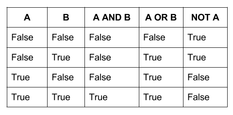

Data Types and Operators
Contents
Data Types and Operators#
Lesson Objectives#
In this module we will be covering the following topics
Variables and Datatypes
User Input
Different Types of Operators
Variables and Data Types#
Variables are used to store values. We assign values to variables by using the equal sign = There are three different data types for variables: string, integer, or float.
In the examples below, we assign different values or datatypes to the variable x.
Each time we assign a value to x and run the code, notice that the data is overwritten. This is referred to as “overwriting” the variable.
x = "Pittsburgh"
print(x) # this is a string variable
Pittsburgh
x = 15
print (x) # this is an intger
15
x = 3.5
print(x) # this is a float
3.5
Variable Names#
There are rules and conventions when it comes to naming variables in Python.
Rules:
Variable names cannot begin with numbers.
Variable names cannot contain spaces.
Variable names are case sensitive.
Conventions:
Don’t start variables with capital letters.
Use underscores instead of spaces.
Use descriptive variable names.
Variable Names and Keywords#
Keywords in Python are special terms that perform a specific function. Variable names cannot be keywords. There are over 30 keywords. See below for a list of examples!
Keywords are also case sensitive. You will notice that while you cannot name a variable False, you can however name a variable false with a lower case f.
and del from None True
as elif global nonlocal try
assert else if not while
break except import or with
class False in pass yield
continue finally is raise
def for lambda return
False = "hello" # this will result in an error because False is a keyword
Input In [4]
False = "hello" # this will result in an error because False is a keyword
^
SyntaxError: cannot assign to False
false="Hello"
print (false) # you can name your variable with a lower case 'f'
Hello
Data Types#
You can identify the data type by specifying the variable after type
strindicates the variable is a stringintindicates the variable is an integerfloatindicates the variable is a float or non-integer
message ="Hello"
type(message)
str
number = 3
type(number)
pi = 3.1415926535897931
type(pi)
Type: String#
str variables are text-based data. In Python, text could be presented in either Unicode or Byte data. Unicode data can store 0 to more Unicode characters, which allows the usage of non-English languages as string variables
They must be contained within a pair of double or single quotation marks: "" or ''
name = "Bob"
print(name)
car = "Ford Pinto"
print(car)
address = '5818 Phillips Avenue, Pittsburgh, PA 15217'
print(address)
Bob
Ford Pinto
5818 Phillips Avenue, Pittsburgh, PA 15217
Type: Integers#
int variables are used for representing integer numbers. Regular numbers, negative numbers and even large numbers are classified as ints
# regular numbers are ints
print(4)
print(type(4))
# negative numbers are ints
print(-1)
print(type(-1))
# Even big numbers are ints
print(20928375403298570293847503984570938457)
print(type(20928375403298570293847503984570938457))
4
<class 'int'>
-1
<class 'int'>
20928375403298570293847503984570938457
<class 'int'>
# Integer Variables (int)
x = 5 # x contains an integer 5
x = x + 2
x = x - 4 # What is the value of x now?
print(x)
3
Type: Floating Point numbers#
float variables are used for representing non-integers or fractional numbers.
# Floating Point Variables (float)
x = 2.5
y = 3.7521
pi = 3.141592653589793238
print(3/4)
type(3/4)
0.75
float
Type: Boolean#
Python has a data type for True and False. A boolean is either True or False
Try it for Yourself#
Create a string variable. Instead of printing the variable, count the length of the characters by typing len(variable) after you assign the string value to the variable.
## Create a string variable and count the length of the characters
User Input#
If you want the user (you) to give your program information, you can use the
input()function.Input will display a text entry box when you run the cell and save it to a variable (if you assign a variable to the input function).
Put a string inside the function to create a prompt.
# as for the user's name and put it in a variable called name
name = input("What is your name?")
What is your name? bob
# now print the contents of the variable called name
print(name)
bob
type(name)
str
note the data type, what if you are working with numbers?
age = input("What is your age?")
type(age)
Changing Data Types#
If you want to do mathematical operations on your data, make sure your data is of the right type
You can’t add a string to an integer.
You can’t divide a float by a string.
# What will happen when we run this?
"5" + 5
---------------------------------------------------------------------------
TypeError Traceback (most recent call last)
<ipython-input-45-0213ade8b510> in <module>()
1 # What will happen when we run this?
----> 2 "5" + 5
TypeError: must be str, not int
Use the
int()function to transform a string into a number
# store a number as a string
number = "5"
print(number)
type(number)
5
str
# transform number from a string to an int
number = int(number)
print(number)
type(number)
5
int
Use the
str()function to coerce your data into a string
# store a number as a number
number = 5
print(number)
type(number)
5
int
# transform a number into a string
number = str(number)
print(number)
type(number)
5
str
Use the
float()function to transform decimal numbers
# store a decimal number as a string
number = "5.5"
print(number)
type(number)
5.5
str
# transform a number into a float
number = float(number)
print(number)
type(number)
5.5
float
Operators#
Arithmetic Operators#
The Python programming language could be treated as a very fancy or complicated calculator.
All of the mathematical operators you know and love are available in Python
Addition:
+Subtraction:
-Multiplication:
*Division:
/Modulus:
%Exponent:
**
# addition
5 + 3
# subraction
5 - 3
# 3 to the exponent of 3
3**3
27
The modulus operator % produces the integer remainder after the division of two numbers. In the example below, 16 divided by 5 is 3 with a remainder of 1.
# Modulus and Remainder
16%5
1
When you assign a value to a variable, you are storing the value in memory. In the example below, when you calculate for z, you are using the values stored in variablex x and y.
# Simple Mathematical Operations
x = 5
y = 10
z = x + y # addition
print(z)
z = x - y # subtraction
print(z)
z = x * y # multiplication
print(z)
z = x / y # division
print(z)
z = x ** y # x to the power of y
print(z)
15
-5
50
0.5
9765625
String Operators#
You can use some mathematical operators (+) on string types.You can use the + operator to combine or concatenate string variables. You must include ' ' to denote a space between the words otherwise they will be combined.
name = 'Jane' + 'Doe'
print(name)
JaneDoe
# Combining strings
first_name = 'John'
last_name = 'Doe'
full_name = 'John' + ' ' + 'Doe'
print(full_name)
John Doe
You can also use the * operator with string variables. Note that * can be used for numeric values or numeric and string. It cannot be used to combine multipe string variables. For example, the code below will result in an error
multi_name = 'Annie' * 'Smith'
print (multi_name)
---------------------------------------------------------------------------
TypeError Traceback (most recent call last)
<ipython-input-46-15b689bb863e> in <module>()
----> 1 multi_name = 'Annie' * 'Smith'
2 print (multi_name)
TypeError: can't multiply sequence by non-int of type 'str'
# Using the * operator to combine both string and numeric values.
multiply_name = 'Kate' * 5
print(multiply_name)
KateKateKateKateKate
Assignment Operators#
The equal sign = is used to assign values to a variable. Throughout this module we have used the assignment operator to create different variables. When we assign a value to a variable, that information is stored in memory. We can use a mix of assignment and mathematical operators to print or display different values.
a = 30
a/5
6.0
b=10
b += 5
b
15
Comparison Operators#
Another set of operators in Python involve comparison operators: ==, !=, >, <, >=, <=
They return Boolean values of True or False. Comparison operators are important as you will see in the the next module when it comes to control flow and conditional statements. You can
a == b a equal to b
a != b a not equal to b
a < b a less than b
a > b a greater than b
a <= b a less than or equal to b
a >= b a greater than or equal to b
You can use Comparison Operators to check if the value of a variable is odd or even. We will use the modulus and remainder operator to determine if a variable is even or odd. In the example below, if a value is even, it would be divisible by 2 with a remainder of 0. Hence in Example 1, it yields a Boolean result that is True. In Example 2, an odd value would not be visible by 2 and would create a remainder that is not equal to 0. Example 2 results in a Boolean value that is True, when we use the != operator. The last example produces a Boolean value that is False, since 21 as an odd number, it cannot producer a remainder value of 0 if divided by 2.
#Example 1: The value is Even
20 % 2 == 0
True
# Example 2: The value is odd
21 % 2 != 0
True
21 %2 == 0
False
Boolean Operators#
Boolean values use the terms: and, or and not. This is an important reason why variables cannot be named and, or, and not.
andrefers to the logical conjunction of two valuesorrefers to the logical disjunction of two valuesnotrefers to the negation or inversion of a value
The Boolean truth table below summarizes all combinations of values for variables A and B.
A and B: A and B are True when both variables A and B have a True value. Hence, only the last value in the A and B column is True.
A or B: A or B are True when either variable A or B has a True value.
Not A: is the opposite of A or whatever the value is for Variable A.
Boolean Truth Table 
In the examples below, let’s apply the Boolean logic to evaluate variable c. We will combine Comparison and Boolean operators. In example 1, c =8, which is both less than 22 and greater than 5, which returns a True value
In example 2, c=8 is neither less than 5 nor greater than 16, hence it returns a False value
# Example 1
c = 8
(c < 22) and (c > 5)
True
# Example 2
c=8
(c < 5) or (c > 16)
False
Try It Yourself!#
For the following mathematical expressions, determine whether it will yield a True or False value, and then check by running the code. To check your answer, copy and paste each individual line and run it.
5!=6
2 < 10
3==3
1 == 2 or 2 == 2
1 == 2 and 2 == 2
not 1 == 2 and 2 == 2
## Enter your answer here, then run each line of code to check your answer!
PRACTICE QUESTIONS#
If you get stuck, scroll to the bottom for the answers!
1) Assigning Variables#
In question 1a) provide the full address for the Cathedral of Learning, which is a combination of integers and string values. If you can recall concatenating variables with the + operator can only be done with string variables. Concatenate each item in the address as string values.
In question 1b) provide the full address for the Cathedral of Learning, but instead of concatenating the values, convert the int values into string values using the str() function.
#1a) Create a string variable and concatenate the address for the Cathedral of Learning
cathedral =
#1b) Provide the full address for the Cathedral of Learning, by converting the int values into string values using the str() function.
2) Mathematical Operators#
Let’s practice with the modulus operator % 2a) Produce a mathematical expression that yields a remainder that is an odd number
#2a)
3) Comparison and Boolean Operators#
3 a) Use the or operator and a combination comparison operators to return a True value. Starting by assigning a numerical value of 10 to the variable a
a = 10
a=10
3 b) Use the not operator and a combination comparison operators to return a False value. Starting by assigning a numerical value of 10 to the variable b
b = 10
b=10
Answers#
#1a)
cathedral ='4200 ' + 'Fifth Ave ' + 'Pittsburgh, PA. ' + '15260'
print(cathedral)
4200 Fifth Ave Pittsburgh, PA 15260
#1b)
cathy_num = 4200
cathy_st = ' Fifth Ave'
cathy_city = ' Pittsburgh, PA. '
cathy_zip = 15260
print (str(cathy_num) + cathy_st + cathy_city + str(cathy_zip))
4200 Fifth Ave Pittsburgh, PA. 15260
#2 a)
22%3
1
#3a)
a=10
a < 20 or a >5
True
#3b)
b=10
not (b <15)
False